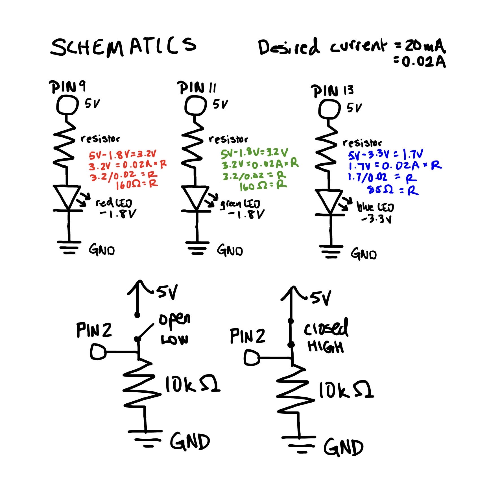
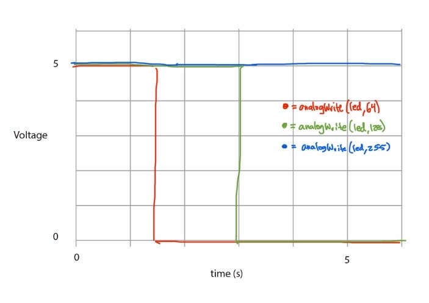

Circuit and Schematics


Code Snippet
int red = 9; // assigning the red LED to pin 9
int green = 10; // assigning the green Led to pin 10
int blue = 11; // assigning the blue LED to pin 11
int buttonPin = 2; // assigning the pushbutton to pin 2
int brightness = 0; // how bright the LED is
int fadeAmount = 5; // how many points to fade the LED by
int buttonState = 0; // initializing buttonState
// the setup routine runs once when you press reset:
void setup() {
// declare LEDs to be an output:
pinMode(red, OUTPUT); // declares red LED as an output
pinMode(green, OUTPUT); // declares red LED as an output
pinMode(blue, OUTPUT); // declares red LED as an output
pinMode(buttonPin, INPUT); // declares the pushbutton pin as an input
}
// the loop routine runs over and over again forever:
void loop() {
// read the state of the pushbutton value:
buttonState = digitalRead(buttonPin);
// check if the pushbutton is pressed. If it is, the buttonState is HIGH:
if (buttonState == HIGH) {
for (int i = 0; i < 256; i++) { // for loop up until brightness of 255
analogWrite(red, i); // writes brightness of red LED
delay(30); // waits 30 milliseconds
}
for (int i = 0; i < 256; i++) { // for loop up until brightness of 255
analogWrite(green, i); // writes brightness of green LED
delay(30); // waits 30 milliseconds
}
for (int i = 0; i < 256; i++) { // for loop up until brightness of 255
analogWrite(blue, i); // writes brightness of blue LED
delay(30); // waits 30 milliseconds
}
} else {
// turn LEDs off when button isn't pressed
digitalWrite(red, LOW); // turn red LED Off
digitalWrite(green, LOW); // turn green LED off
digitalWrite(blue, LOW); // turn blue LED off
}
}Operation
Youtube Link to Fade Operation
Questions
Draw a graph where the X axis is time and the Y axis is voltage. Draw 3 lines representing the voltage across an LED with analogWrite(led,64), analogWrite(led, 128), and analogWrite(led, 255).
A brightness of 64 is 25% of the duty cycle, 128 is 50%, and 255 is 100%.

Given your schematic, circuit, and firmware, assuming the only thing that draws current is your LEDs, how long would your circuit run if powered by a 1200 mAh battery?
If V = IR, the voltage is 5V, the red and green LEDs have a voltage drop of 1.8V and use 220 ohm resistors, and the blue LED has a voltage drop of 3.3V and uses a 100 ohm resistor, the total current would be 14.5mA + 14.5mA + 17mA = 46mA. A 1200 mAh battery would last approximately 1200 mAh/46 mA = 26.09 hours.
Measure and record the actual voltage across one of your LEDs when it's on. How does this compare to the theoretical forward voltage for your LED color?
For the red LED on the RGB LED, I measured a voltage of 1.91V when it was on. It was slightly higher than the theoretical forward voltage of 1.8V.
Did you use AI tools in completing this assignment?
No.